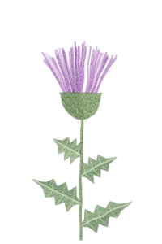
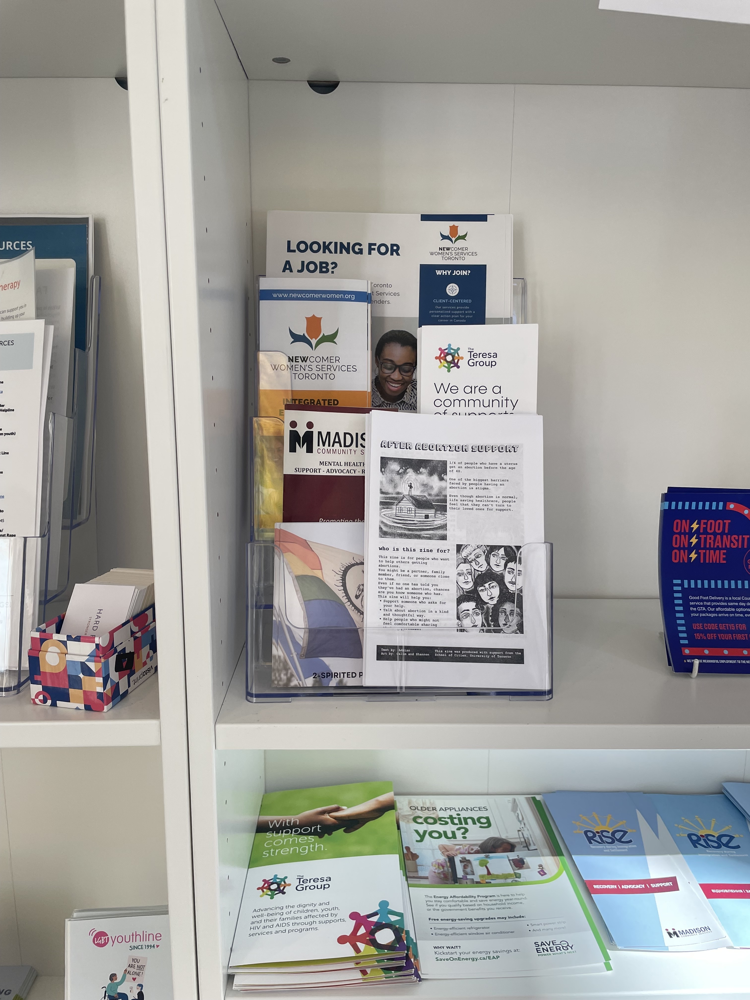
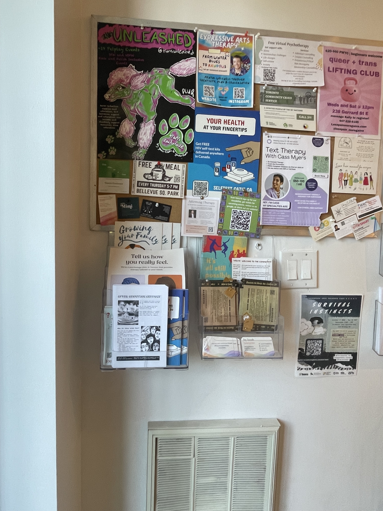
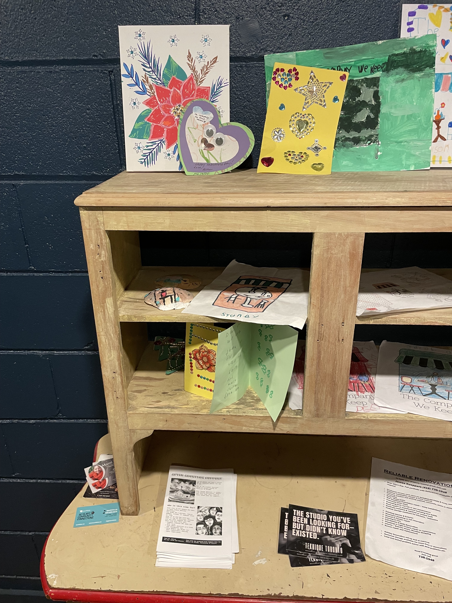
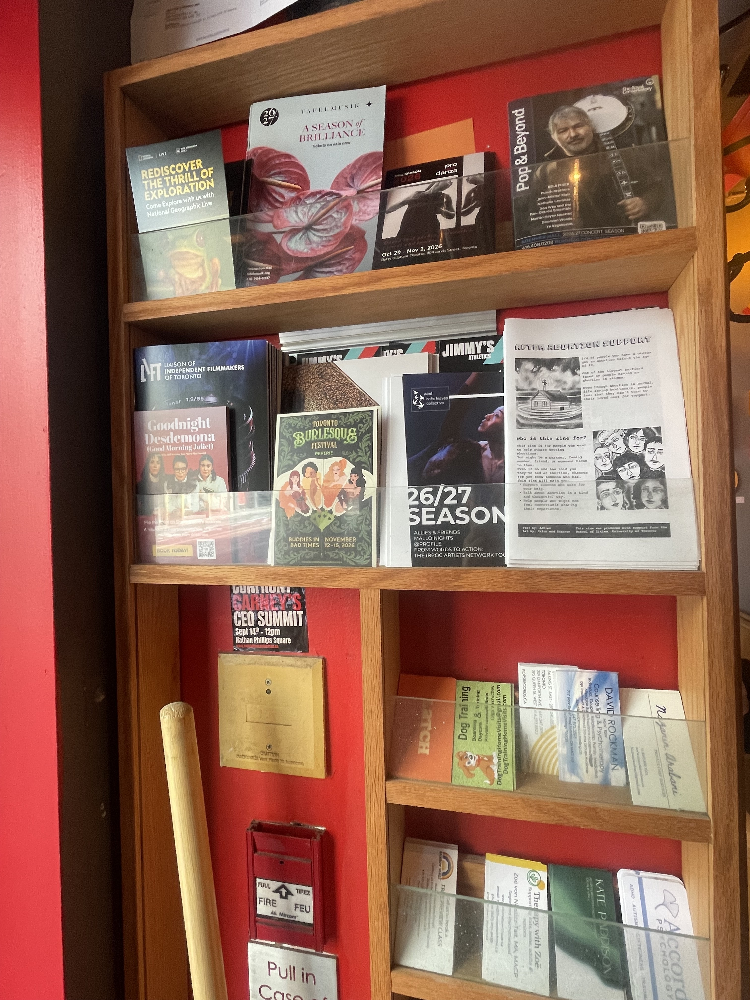
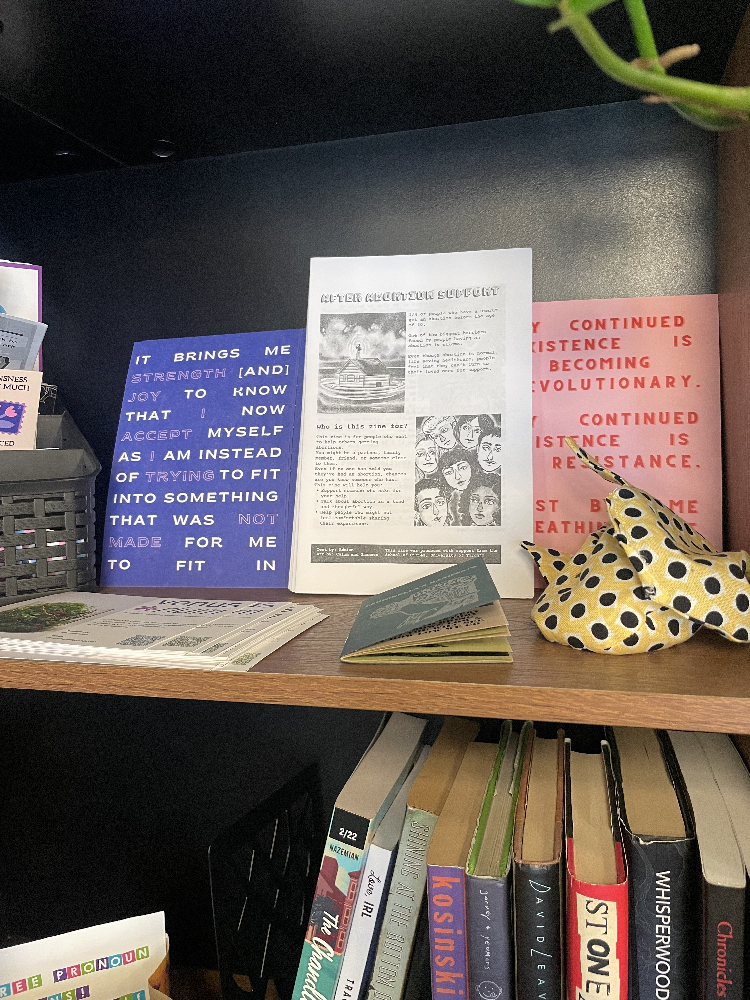
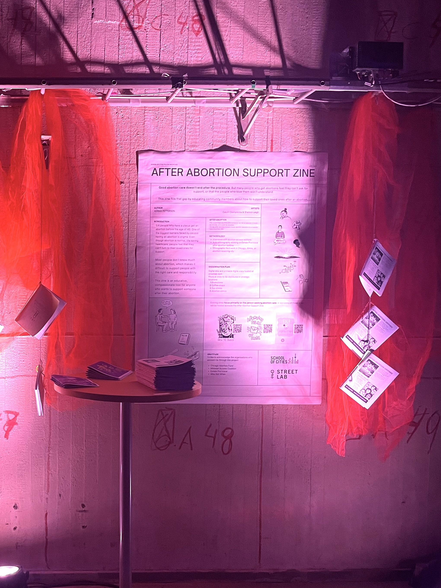
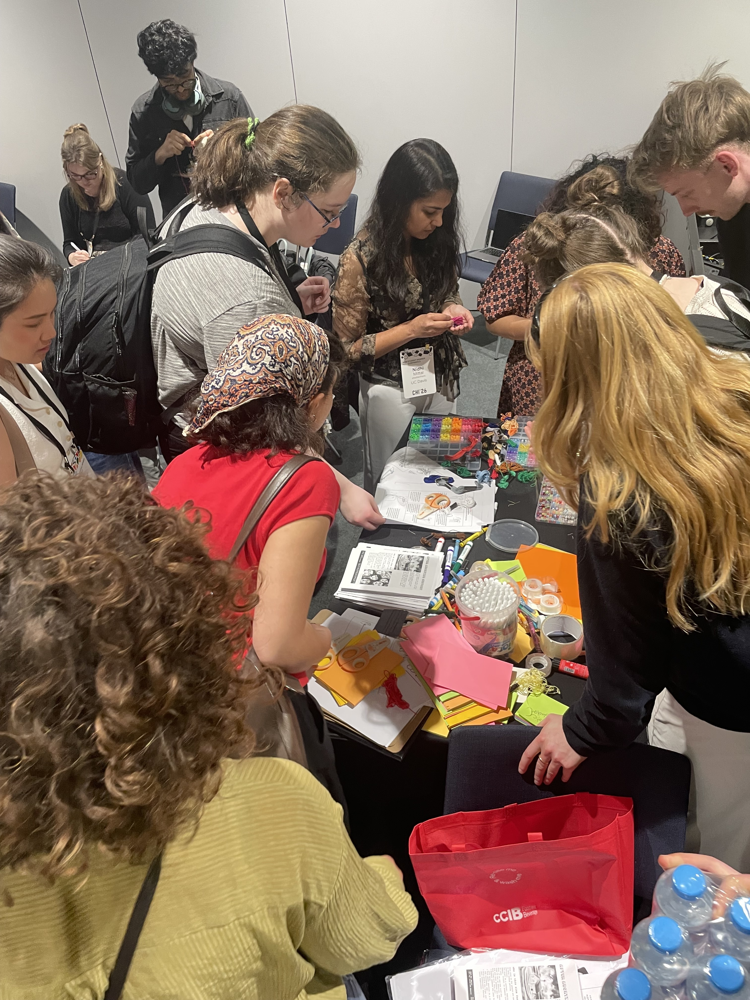

After-Abortion Support Zine

A self-published zine offering emotional support and resources after an abortion. It has been distributed in public venues and was featured in the FemTech and Feminist Tech Showcase through KTH in Stockholm.Download
Where the zine has been shared






